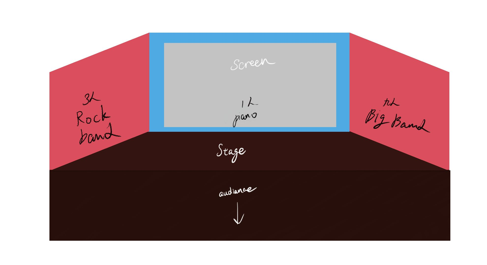

30分鐘個人專場提案
「鬥樂的心靈談話」
創作構思與概念
創作背景：
本企劃是以音樂的「call and response」為發想，希望能將此聽覺具現化，並且融入觀眾互動的元素。音樂背景方面則是以出來臺北生活，上了大學之後對於人生迷茫，心裡所產生出來的聲音對話。
人們的心裡總會有好幾種聲音告訴我們，應該要去勇敢地面對那些未知的挑戰，但另一方面又會有別的心聲告訴我們安逸的度過就好。因此我想要做的是將這兩種心聲轉變為不同風格的音樂，在舞台上呈現出內心的掙扎。
代表著內心較為舒緩的聲音，期待著自己能夠往上的不斷攀爬，一步一步的走向自己所期望的高度。
代表著內心發洩的情緒，想要對著那個無能與怠惰的自己怒吼，不斷封閉著自己的心靈。
舞臺上的定位：
（參考圖一）打破純傳統樂器樂演奏的距離感，舞台左右兩側並非外在角色，而是個人的兩種心聲外畫出來的投射，擴大本人表達的一種形式。而中央的鋼琴則代表本人的精神核心，透過鍵盤不斷地自我對話，來進行自我解剖。
展演空間與視覺設定
空間分佈（參考圖一）：
• 中央舞台：鋼琴家（本體） — 穿梭於兩種極端的風格之間，負責引導全場敘事與核心旋律。
• 左舞台：Big Band樂團 — Swing風格，較為和緩與慢板，和聲較複雜。
• 右舞台：Rock樂團 — Alternative Rock風格，和聲較單一但旋律穿插藍調或是更多暴走的鋼琴旋律。

視覺與燈光聯動：
聚光燈隨著旋律的「Call and Response」來即時追隨主導旋律的一側。
背景投影顯示如街機格鬥般的「能量UI條」（參見圖二）。

30分鐘曲目結構與流程
MIT 跨域整合與技術實踐
🎮 展演連擊互動機制原型體驗
現場觀眾連點集氣！拉鋸雙向能量條